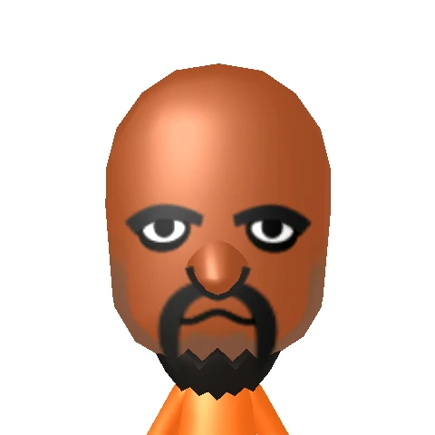

Development: The Wii was developed and released in 2006 where the
response to an increasing popularity of casual gaming and the burning
desire to create a console that revolutionises the gaming platform.
Wii's innovation comes with the controller's motion based controls
where users can pick up and play games like Wii Sports. A Wii
controller is a wireless remote that attaches to a joystick or other
input device. The remote keys into a wireless sensor attached to the
console so that the games detect movement of the device as well as
input from the device’s buttons. There's a variety of A variety of
different controllers are available, such as a balance board, a racing
wheel, and a floor mat.
Launch: Upon released on November 19, 2006, it was a immediate success
which sells over 600,000 units in the United States alone within eight
days, which helped generate comsumer demand for the system.

Popularity: Wii went on to become one of the best selling consoles of
all time. The Wii also has built-in Wi-Fi for connecting to the
Internet. After a connection is established with one of Nintendo’s
special servers, players can choose from various channels to
communicate and play with other Wii owners, display news and weather
reports, download from an extensive online library of classic Nintendo
games from older systems, and create and display special Wii avatars,
known as Miis. A browser can also be purchased for surfing the World
Wide Web. This relates to the rising popularitym among families and
common gamers, thanks to its user-frinedly interface and a wide
variety of family-friendly games.
Legacy: Although Nintendo's release of the Wii U was short-lived, The
Wii's impact on the video game industry was significant, particularly
in terms of the way it popularized motion controls and made gaming
more accessible to a wider audience. The console also helped cement
Nintendo's reputation as a company focused on innovation and
creativity, rather than simply competing on hardware specs.
Recent trends & developments
Since the Nintendo Wii Sports released in 2006, both adults and
children are exposed to alternatives to traditional physical
activities by providing a non-threatening environment which can
motivate them to participate in more physical activities, increasing
their overall agility, balance and coordination. Click here for more info